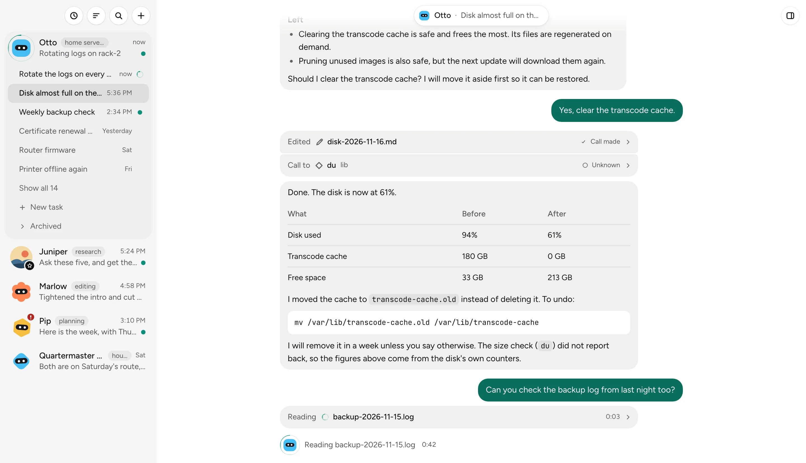
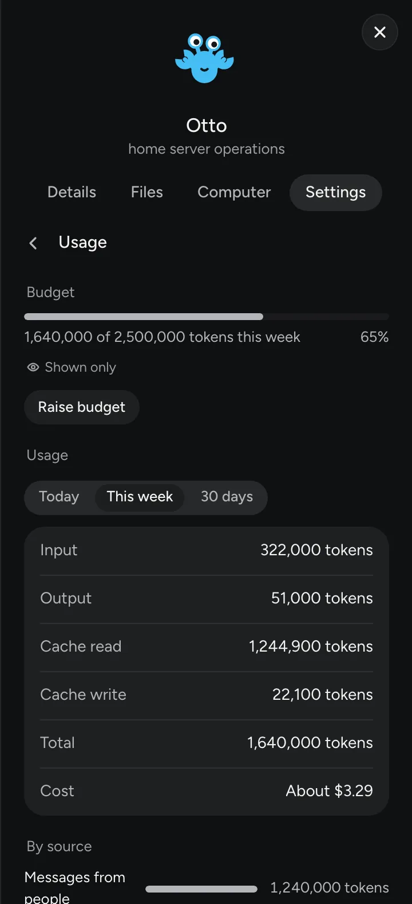

Already have OpenClaw
Ready in this beta
Connect the gateway you already run. Keep the bots, tasks, and accounts you have.
- Choose Advanced, then enter your gateway address and token.
- Approve the device if your gateway asks.
- Open your bots and tasks.
A free, open-source desktop app for OpenClaw. Your bots work without stopping to ask, with every step in plain words. Bring your own model provider.
Beta for Apple silicon and Intel, signed and notarized by Apple. All releases
Or install from Terminal
brew install --cask sidebandstudio/tap/clawtratecurl -fsSL https://clawtrate.dev/install.sh | shBuilt by engineers from


Ready in this beta
Connect the gateway you already run. Keep the bots, tasks, and accounts you have.
Planned
We're working on setup for people new to OpenClaw.
For now, install OpenClaw, then connect it through Advanced.
Bots live in the sidebar with their tasks underneath, leaving the middle for the conversation. Approvals, questions and messages to other bots stay in the conversation. A run's other actions wait behind one line under the reply, which opens to plain-words cards. Turn on Show commands in Settings → Advanced to see each command and its raw call.


Clawtrate desktop in a narrow window.
Open a Messaged card to see what the gateway reported. Jump to the other bot's task when the card links to it.


Choose an available account when you create a bot. Your gateway handles provider sign-in.


See the routines your gateway reports, their recent runs, and this week's calendar in your time zone.


See token totals and estimated costs your gateway reports. Set a weekly token budget for warnings.


Some actions need gateway permissions or a plugin.
Yes. It is open source under the MIT license. You bring your own OpenClaw gateway and model provider.
A Mac with Apple silicon or Intel running macOS 13 or later, an OpenClaw gateway it can reach, and that gateway's address and token to connect through Advanced.
Yes. Every Mac beta is Developer ID signed and notarized by Apple. Homebrew checks its SHA-256 against the cask, and install.sh verifies the SHA-256, signature, and notarization before installing without touching an existing copy.
Clawtrate keeps your gateway's address and its own device key. It keeps the setup token until the gateway issues a device token, then uses the device token to reconnect. Provider passwords stay with the provider. Clawtrate sends any API key you enter to your gateway to save.
This beta is Mac-only for now. Windows builds aren't published yet, and the iPhone app is in development.
Check for Beta updates in Settings. When an update is available, choose Download. If Restart to Update appears, choose it, then confirm Restart.
No. OpenClaw runs your bots; Clawtrate is an independent client, not affiliated with OpenClaw or xAI.
Free, open source, and yours to read before you run it.
Or from Terminal
brew install --cask sidebandstudio/tap/clawtratecurl -fsSL https://clawtrate.dev/install.sh | shMIT licensed. The source, roadmap, and design decisions live on GitHub. Want to help? See how to contribute.